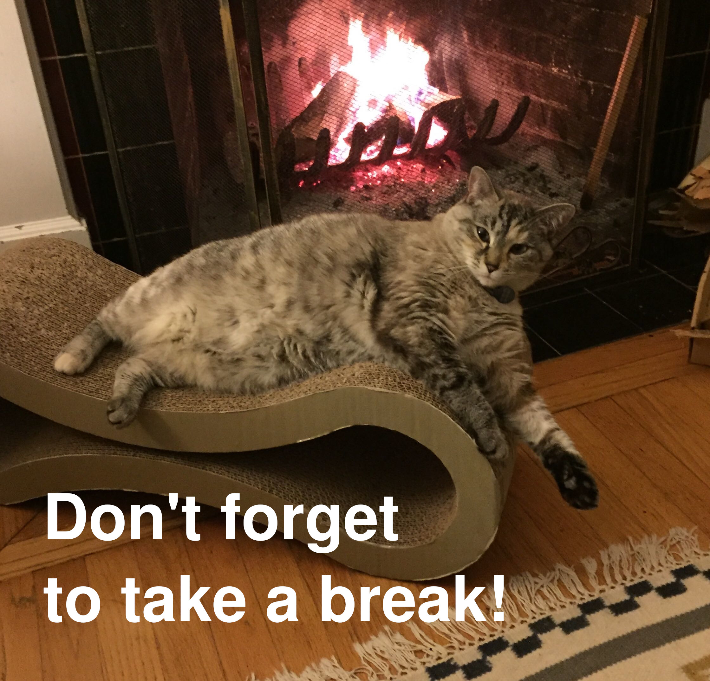

March 20th, 2020
THE STORY
The problem was I started having tremors in my head and neck. Turns out I have a condition called Cervical Dystonia, and my new lifestyle of sitting for hours at a computer under intense focus was...not good. I needed a recurring reminder to stand up, walk around the block, or just take a break for 5 minutes. And it needed to be something that was hard to dismiss.
My solution was to bring my cat to work. Or rather, to build a cron job that showed me a photo of my cat every so often, to remind me to give my body a break. I had never set up a cron job on my computer, but it's not hard. If you aren't familiar, cron is a utility available on most systems, and it allows you to run jobs at set intervals. In this context, a 'job' can be almost anything.
Most linux distributions have the crontab command, which makes setting a cron job even easier. Running crontab -e opens a document in your default editor, and you just add your cron syntax and the command, script, or path to a script that you want to run as a job. For me, this looks like:
The most interesting piece of the design puzzle was something something something else. Probably a few more sentences here.
Future-facing paragraph: maybe there is more that could be done to extend this program? Or what did I learn from it? Or perhaps what could be done better if we were to build it again? Or even some resources to further explore.